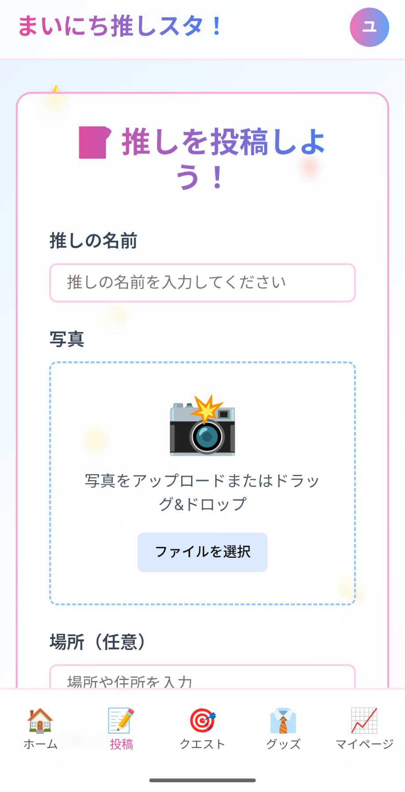
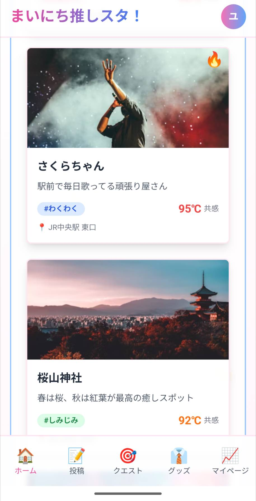
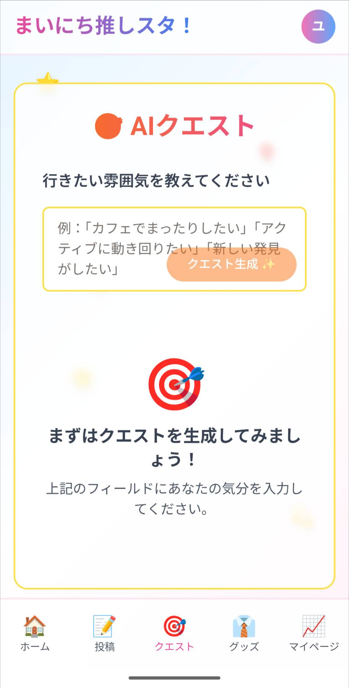
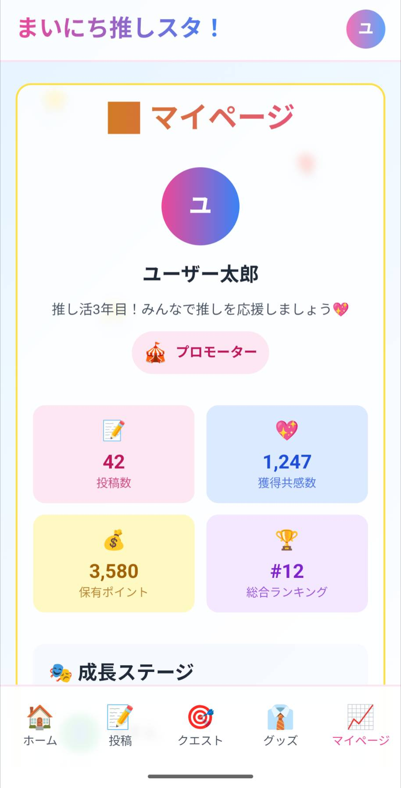

🏠 ホームページ（トップ画面）
ユーザー投稿の推しがカード形式で一覧表示。「あなたのいる場所で一番熱い推し！」がリアルタイムで確認できます。色鮮やかな原宿アイドル風デザイン。

推し活をもっと楽しく、もっと身近に！
「まいにち推しスタ！」は、好きな“推し”を自由に応援し、みんなで共有できる次世代SNSアプリです。アイドルやスターだけでなく、地域の名物やお気に入りの場所、身近なモノまで、ジャンルは無限大。自分の推しを語り、共感の輪を広げましょう。プロダクトは日々BUして行きますのでコメントがあればDiscordチャンネルへ遊びに来てください！
ユーザー投稿の推しがカード形式で一覧表示。「あなたのいる場所で一番熱い推し！」がリアルタイムで確認できます。色鮮やかな原宿アイドル風デザイン。
名前・理由・コメント・写真・気持ちタグを選んで投稿。投稿内容は即ホームに反映され、共有が進みます。

推しのプロフィール、写真、コメントが楽しめます。「共感温度スライダー」で気持ちを表現。推しは投稿数や共感数で成長していきます。
 「今日の気分」などを入力するとAIが推しクエストを提案。達成履歴も残り、推し活がもっと楽しくなります。
仮想グッズをポイントで購入。コレクションや部屋作りもOK。売上の一部は地域支援に寄付されます。

投稿数や共感数で自分の推し活レベルがアップ。「推す人」から「社長」まで成長し、ランキングにも反映されます。
